Free Smoothie Tools
Smoothie Builder
Tick the ingredients you want and see the estimated calories and protein for one serving.
Smoothie Calorie Calculator
Pick a base, a fruit, and an add-in to estimate the calories in one glass.
Protein Smoothie Finder
Tell us your goal and get a high-protein smoothie recipe.
Smoothie Recipe Filter
Filter our guides by type.
Smoothie Serving Scaler
Scale any smoothie recipe up or down. Enter the recipe's base amounts for 1 serving, then choose how many servings you need.
All Smoothie Recipes
Scroll sideways to browse every recipe.
 Green Smoothies
Green SmoothiesHow to make green smoothies that actually taste good, the best leafy greens, and easy starter recipes.
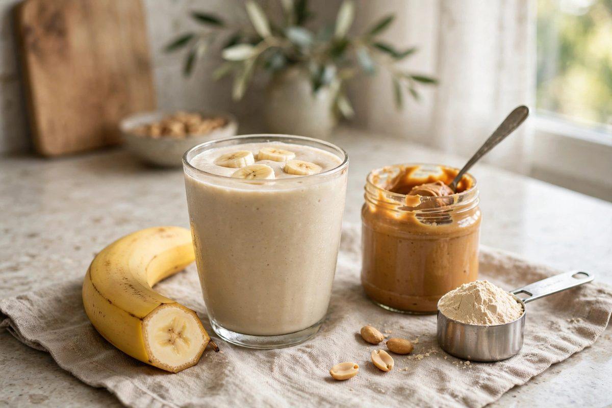
Protein SmoothiesHow to build high-protein smoothies that keep you full, with and without protein powder.
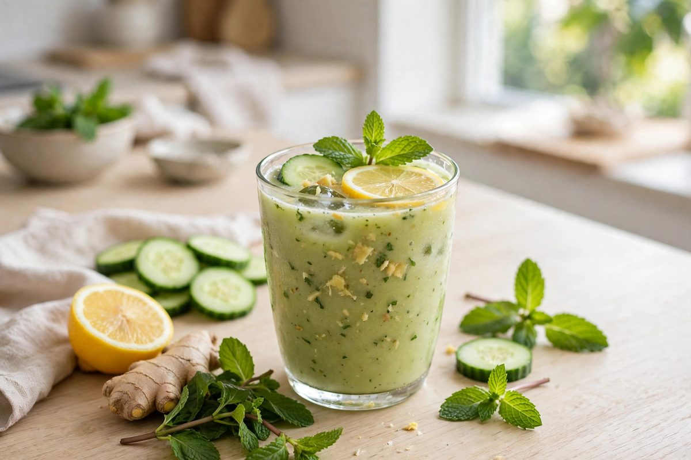
Detox SmoothiesWhat detox smoothies really do, which ingredients help, and recipes that are light and refreshing.
 Breakfast Smoothies
Breakfast SmoothiesFilling breakfast smoothie recipes that keep you full until lunch, with oats, protein, and fruit.
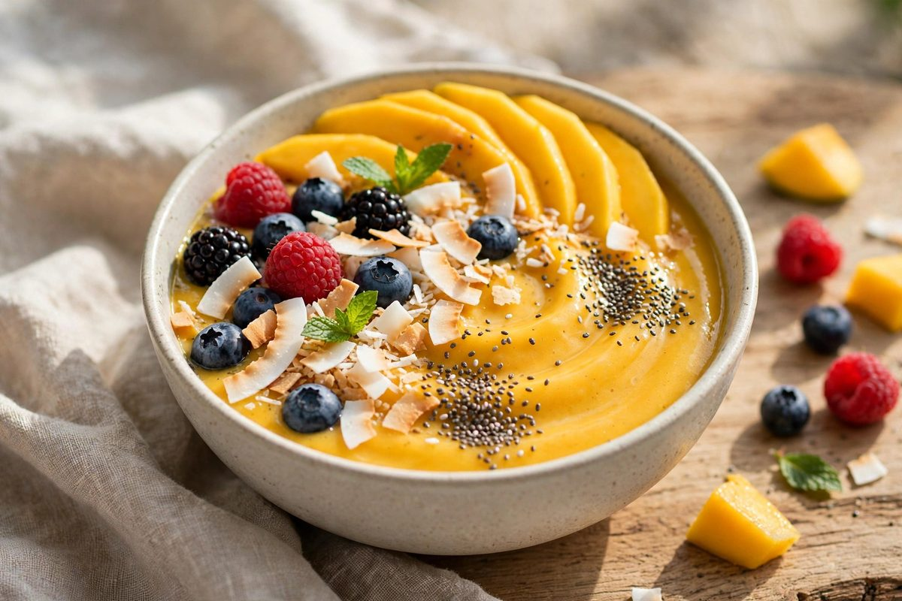
Smoothie BowlsHow to make thick smoothie bowls, the best toppings, and recipes that eat like a meal.
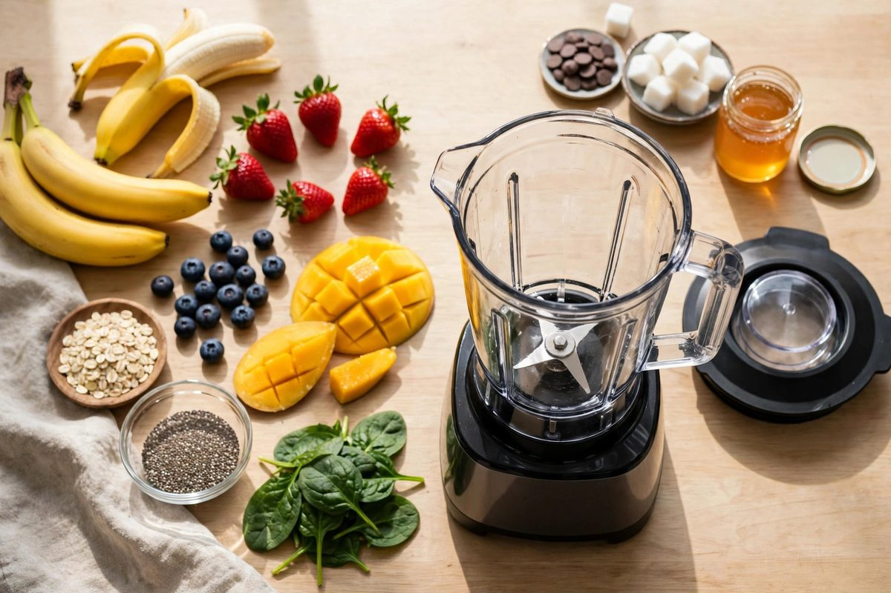
Common Smoothie MistakesThe ten most common smoothie mistakes, from too much sugar to the wrong blender order, and how to fix them.
 Berry Smoothies
Berry SmoothiesThe best berry smoothie recipes, which berries to use, and why frozen berries work so well.
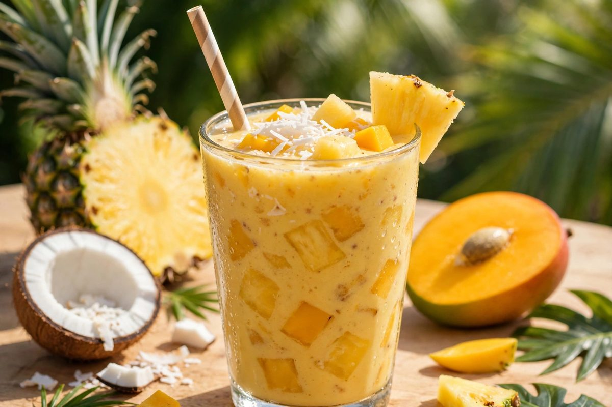
Tropical SmoothiesMango, pineapple, and coconut smoothie recipes that taste like a holiday, plus tips for using frozen fruit.
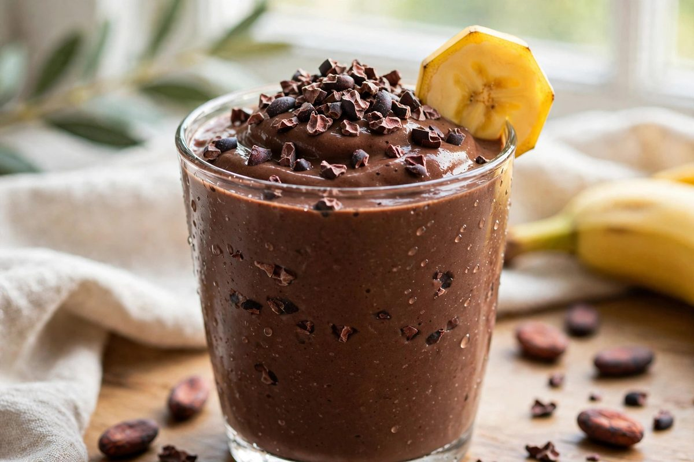
Chocolate SmoothiesHealthy chocolate smoothie recipes using cocoa, banana, and peanut butter — dessert flavour without the sugar crash.
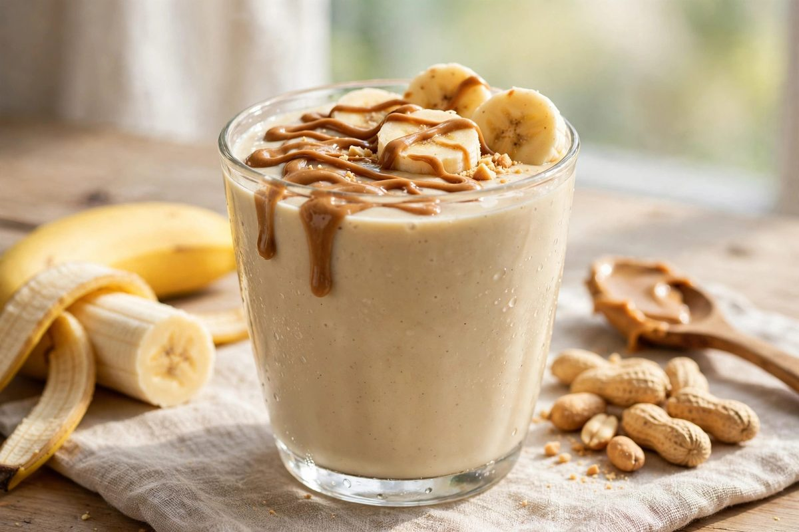
Peanut Butter SmoothiesCreamy peanut butter smoothie recipes, how much peanut butter to use, and lighter swaps.
 Veggie Smoothies
Veggie SmoothiesHow to make vegetable smoothies that taste good, the best vegetables to blend, and savoury options.
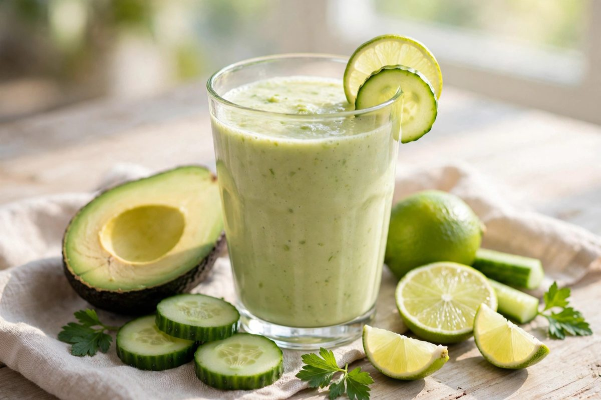
Low-Sugar SmoothiesHow to make smoothies low in sugar without losing flavour, with berry, green, and veggie recipes.
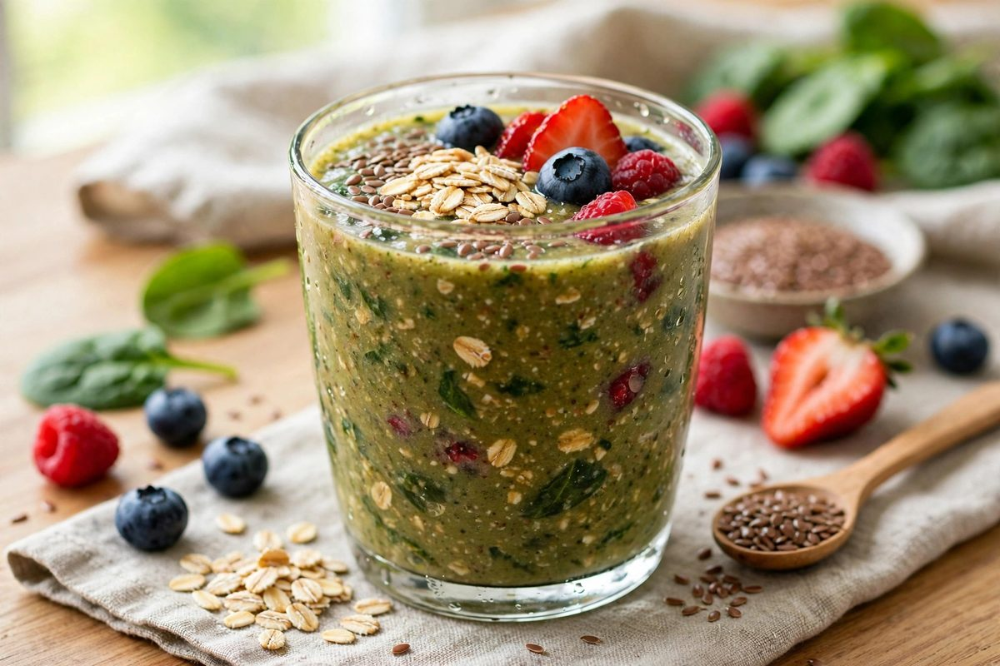
High-Fiber SmoothiesHow to add fibre to smoothies with oats, chia, flax, and vegetables, and why fibre matters.
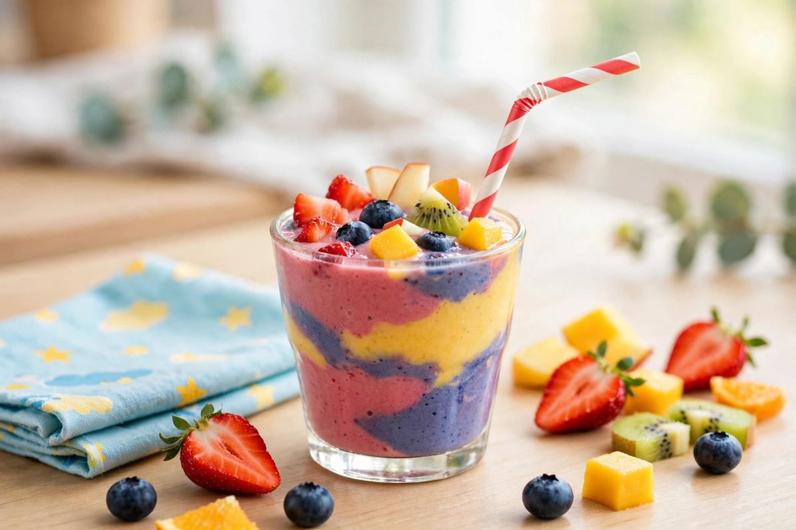
Smoothies for KidsKid-friendly smoothie recipes, how to hide vegetables, and what to avoid in children's smoothies.
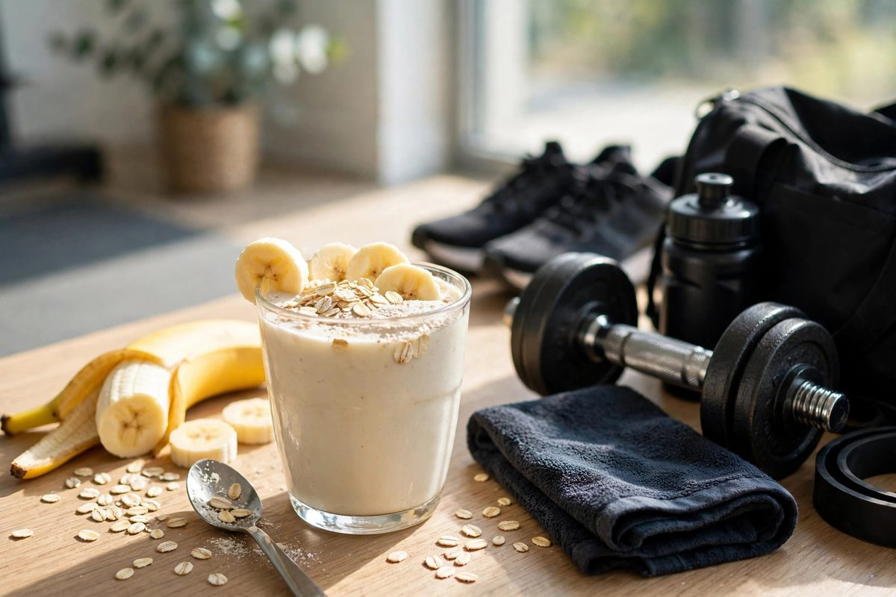
Post-Workout SmoothiesWhat to drink after exercise, how much protein and carbs you need, and the best recovery recipes.
 Smoothie Meal Prep
Smoothie Meal PrepHow to prep smoothie packs for the week, freeze them, and blend a fresh smoothie in under a minute.
 Best Blender Guide
Best Blender GuideHow to choose a blender for smoothies, what power you need, and how to look after it.
 Smoothie Ingredients Guide
Smoothie Ingredients GuideA guide to smoothie ingredients: bases, fruits, greens, proteins, and extras, and how to combine them.
 Frozen Fruit Guide
Frozen Fruit GuideWhy frozen fruit is great for smoothies, which fruits freeze best, and how to freeze your own.
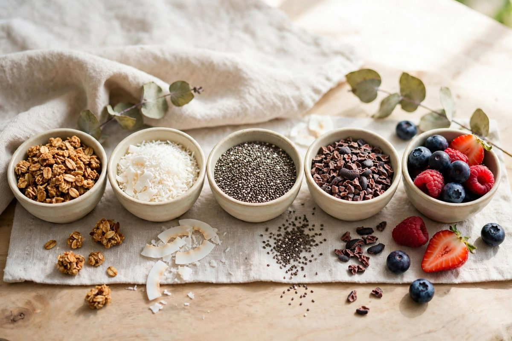
Smoothie ToppingsThe best smoothie bowl toppings, how much to use, and how to keep toppings from ruining a healthy bowl.